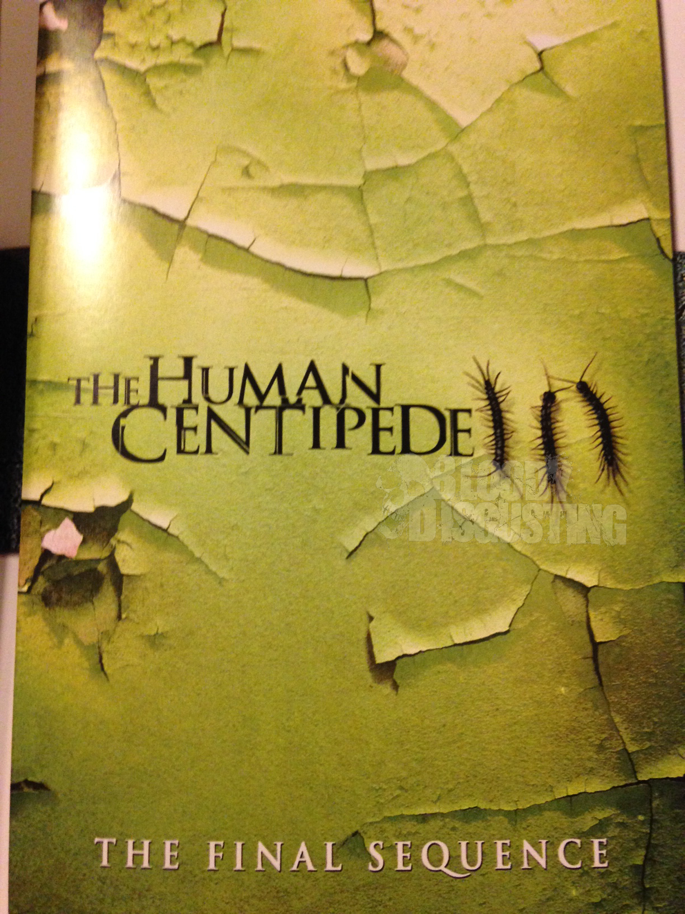

Pelicula de Terror (The Human Centipede)

SINOPSIS:The Human Centipede
Si se supone que uno de los objetivos del género de terror es perturbar, entonces The Human Centipede (First Sequence) (2009) cumple este objetivo a la perfección, aunque sea de forma un poco inesperada. De hecho hay una gran diferencia entre la brutalidad de la obra acabada y la expectación que generó esta reciente producción holandesa gracias a un minuto de metraje que rodó por la red y que anticipaba una premisa difícil de soportar: la historia de un perverso cirujano empeñado en unir quirúrgicamente a tres incautas víctimas para formar un solo ser. La conexión boca-ano de los desdichados personajes dio pie evidentemente a muchos chistes, pero también dejaba en evidencia una vertiente cada vez más numerosa del cine de terror de los últimos años, y que consiste en aquellos trabajos que intentan llegar más allá de los límites de lo mediáticamente aceptable, revelando incluso una nueva forma de entender la comercialidad de estas cintas: al igual que la francesa Martyrs (2008) o la más reciente A Serbian Film (2010), The Human Centipede probablemente nunca vea un estreno comercial en salas de cine, pero eso no le ha impedido ganarse una gran popularidad tanto en festivales como por Internet.
Dicho esto, hay que decir que la película no es visualmente tan escabrosa como se podría llegar a creer; a decir verdad, los mayores horrores transcurren en la mente del espectador, que ya va preparada no sólo gracias a la premisa inicial, sino a una perturbadora secuencia en la que el doctor (gloriosamente interpretado a la perfección por el conocido actor alemán Dieter Laser) explica fríamente a sus víctimas (diagramas mediante) los detalles de la intervención. El resto de la cinta es no sólo poco gráfico, sino que además está tratado incluso con cierto sentido del humor, un humor muy negro y retorcido en ocasiones pero también bastante evidente en la caracterización del cirujano como un mad doctor salido de un cómic con todo y la inevitable referencia a los experimentos nazis (esa fuente inagotable de horrores pulp) y su interacción con la "criatura", cuya pieza frontal es un joven japonés que sirve la función de crear una barrera lingüística entre el doctor y su creación. Las otras víctimas, dos guapas chicas americanas, emparentan la película de Tom Six con esa vertiente ya conocida del cine de terror actual de hablar de los peligros que encuentran aquellos que se aventuran fuera de los seguros límites de casa (esa dead tourist movie de la que tanto hemos hablado).
Pero esto es sólo al principio: lo interesante de The Human Centipede es que es abiertamente sincera en su afán de perturbar y lo hace de forma sorprendentemente sutil teniendo en cuenta lo escandaloso de su premisa. No deja de sorprendernos, en todo caso, encontrarnos ante una película tremendamente sencilla que toca la tecla de la fascinación del público por lo grotesco y la exposición lúdica del sufrimiento ajeno. En este sentido el público no se diferencia mucho del desquiciado cirujano, pero lo cierto es que Tom Six ha conseguido subordinar este comentario sobre el horror a lo que ante todo es un muy buen thriller; como espectadores realmente nos interesa llegar hasta el final para ver cómo se resuelve el conflicto de estos desdichados personajes atrapados en el sádico juego de un psicópata. La general sencillez argumental que presenta hace que el tramo final tenga una estructura ya muy vista en este tipo de trabajos, con piruetas argumentales ya muy conocidas en este género, pero estas faltas de originalidad no molestan y son perfectamente coherentes con el resto de la cinta.
Para mí personalmente el principal atractivo de The Human Centipede está en la manera como evidencia el insaciable vouyerismo por parte del seguidor del género; en mi caso durante mucho tiempo pensaba que esta sería una de esas películas que desearía no haber visto, pero Tom Six ha conseguido tratar su desagradable premisa de una forma que sinceramente no me esperaba y encima logrando ser igual de perturbador sin necesidad de caer en una sobrexposición que por otro lado hubiese sido supérflua. Probablemente, y no sólo por la obviedad cronológica, esta sea la última película de terror de su década y el auténtico inicio de la ya mencionada competición por impacto. Más por su premisa que por su ejecución, estamos ante una gran película que para mí merece ser vista pero me temo no será del agrado de muchos. De todas formas habría que preguntarse en todo caso a qué se debe realmente la decepción de algunos y si esta se verá de alguna manera compensada con la secuela ya anunciada por su director a pesar de que esta obra es bastante redonda y definitiva en cuanto a su final. Sólo puedo repetir que desde aquí la recomendamos ampliamente como una de las mejores de la década pasada.
EQUIPO NIÑOS(PHJ)
Pelicula Comica (Como si Fueran Niños 2)
SINOPSIS:Como si Fueran Niños 2
Dennis Dunan nos trae la segunda entrega de Niños grandes. En la primera pudimos contar con la presencia de Adam Sandler (Un papá genial), Salma Hayek (El mexicano) o Rob Schneider (Gigoló) y en ésta, también estarán pero junto a nuevos actores como Taylor Lautner (La saga Crepúsculo), entre otros.
Esta segunda parte seguirá los mismos pasos que la anterior, y nos hará reir con la imparable cadena de chistes sexuales y escatológicos que a todas horas cuentan sus protagonistas, en los que no hace falta profundizar mucho para que nos demos cuenta de que siguen siendo tan críos e infantiles como siempre. ¿Conseguirán de una vez por todas madurar? Lo único seguro es que esta nueva reunión de los amigos de la infancia, será de nuevo una auténtica locura.
EQUIPO NIÑOS(PHJ)
Pelicula de Ciencia Ficcion (ROBOCOP remake)
SINOPSIS:ROBOCOP remake
El director de “Tropa de élite” firma este moderno remake del clásico de la ciencia-ficción dirigido por Paul Verhoeven en 1987.
Año 2028, la compañía multinacional OmniCorp manda en el área de la tecnología robótica. Sus robots han ganado todo tipo de guerras fuera del territorio estadounidense y ahora quieren aplicar esa tecnología punta en el ámbito nacional. Por otra parte, Alex Murphy es un policía de Detroit que se esfuerza al máximo por acabar con la ola de crimen que arrasa la ciudad. Después de ser críticamente herido durante el cumplimiento del deber, OmniCorp aprovechará la ocasión para utilizar su gran conocimiento de la ciencia robótica y salvar a Alex, dotándole de nuevas e increíbles habilidades, pero que irán acompañadas de problemas a los que un hombre corriente jamás ha tenido que enfrentarse.
EQUIPO NIÑOS(PHJ)
Pelicula Musical (Mago de OZ)
SINOPSIS:Mago de OZ
Oz: The Great and Powerful (Oz, el Grande y Poderoso) recrea los orígenes del Mago de Oz, el popular personaje de Frank Baum. Oscar Diggs (James Franco), un mago de circo de poca monta y de dudosa reputación, tiene que abandonar la polvorienta Kansas y dirigirse al brillante País de Oz. Está convencido que le ha tocado el premio gordo y que la fama y la fortuna están a su alcance. Pero las cosas se tuercen cuando conoce a tres brujas: Theodora (Mila Kunis), Evanora (Rachel Weisz) y Glinda (Michelle Williams), que no están nada convencidas que Oscar sea el gran mago que todo el mundo esperaba ansiosamente. Oscar tiene que enfrentarse a todo tipo de problemas en el País de Oz y también a sus habitantes. Así que deberá averiguar lo antes posible quién es bueno y quién es malo. Oscar utiliza sus juegos de magia, con ingenio, fantasía y algo de brujería y además de transformarse en el gran y poderoso Mago de Oz se convertirá en un hombre mejor.
EQUIPO NIÑOS(PHJ)
Pelicula de Melodrama (Tengo Ganas de Ti)
SINOPSIS:Tengo Ganas de Ti
Película no recomendada a menores de 12 años.
Hache (Mario Casas, 'Grupo 7'), después de haberse marchado a Londres unos años, decide regresar a Barcelona. Pero las cosas no están precisamente como las dejó. Todos aquellos que lo rodeaban han cambiado. También él. Pero una cosa continúa exactamente igual: sigue sin olvidar a Babi (María Valverde, 'La flaqueza del bolchevique'), el gran amor de su vida. Sin embargo, Babi ha rehecho su vida y está prometida con otro hombre. Hache intentará olvidarla por todos los medios e intentará él también empezar desde cero, cambiando de ambiente, saliendo con otros amigos, buscando otro trabajo... En este nuevo itinerario, Hache conocerá a Gin (Clara Lago, 'Fin'), una chica dura e intensa que tiene las mismas aficiones que él y que le atrapará en su mundo. Ambos iniciarán una relación sentimental, pero... ¿podrá Hache olvidar sus sentimientos hacia Babi? Solo al encontrarse en una fiesta con su antiguo amor, Hache se verá de nuevo confuso y en un mar de dudas. Hache se ha envuelto en una coraza y ya no cree en nada ni en nadie, pero a pesar de hacerse el fuerte, en el fondo, sigue siendo el mismo romántico de siempre.
EQUIPO NIÑOS(PHJ)
Pelicula Historica (300 rise of empire)
SINOPSIS:300 rise of empire
Después de su victoria sobre los 300 soldados de Leonidas, la armada persa, bajo el mando de Xerxes (Rodrigo Santoro, Qué esperar cuando estás esperando, Encontrarás dragones), de quien dicen que es un mortal convertido en dios, marcha a través de las ciudades-estado griegas más importantes del Imperio. La primera ciudad a la que llegan es Atenas, cuya fuerza se encuentra sobre todo en su flota, liderada por el admirado general griegoTemístocles (Sullivan Stapleton, Los chicos de diciembre, En la oscuridad).
La intención de Tesmítocles es la de unificar toda Grecia, pero se verá obligado a enfrentarse a las tropas persas de Xerxes y de Artemisa (Eva Green, Sombras tenebrosas, Camelot), la vengativa comandante de sus enemigos.
EQUIPO NIÑOS(PHJ)
Pelicula de aventura (UP)
SINOPSIS:UP
La película se centra en torno a un viudo de edad avanzada llamado Carl Fredricksen y un ansioso niño escultista cuyo nombre es Russell, quienes vuelan a Sudamérica hacia el Parque Nacional Canaima, Venezuela a bordo de una casa flotante suspendida con globos de helio.
Carl Fredricksen es un viudo vendedor de globos de 78 años y un ansioso niño escultista cuyo nombre es Russell, quienes vuelan a Sudamérica hacia el Parque Nacional Canaima, Venezuela a bordo de una casa flotante suspendida con globos de helio, consiguiendo llevar a cabo el sueño de su vida atando miles de globos llenos de helio a su casa y salir volando rumbo a América del Sur. Nada más comenzar su viaje y sin posibilidad de retornar la tranquilidad de Carl se desvanece cuando alguien llama a la puerta: se trata de un explorador de ocho años llamado Russell, con optimismo a prueba de bomba. La película termina con una escena en la que se muestra que la casa aterrizó junto a la catarata, en Cataratas del Paraíso. Haciendo ver que "Ellie" vive ahora en Cataratas del Paraíso.
EQUIPO NIÑOS(PHJ)
Pelicula de Documental (Osama Bin Laden)
SINOPSIS:Osama Bin Laden
Osama Bin Laden, el hombre que inspiro los atentados del 11 deseptiembre de 2001, se ha ocultado en diversos lugares de la geografia del integrismo islamico desde que fue expulsado de Arabia Saudita a principios de los anos noventa, aunque nunca ha podido ser localizado por los servicios secretos occidentales. El documental recorre la trayectoria de Bin Laden en Oriente Medio, desde su implicacion en la lucha contra la presencia sovietica en Afganistan durante los anos ochenta del siglo XX, hasta su desafio terrorista a Occidente. Tras los ataques del 11 de septiembre de 2001 y hasta la actualidad, ha vivido oculto en diversos puntos de Afganistan, Pakistan y Sudan, lugares que el genero/documentales" target="_blank">documental tratara de desvelar…
EQUIPO NIÑOS(PHJ)